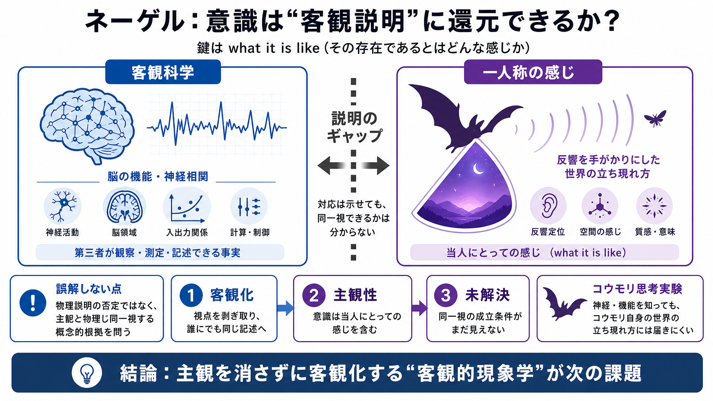

Nagel's Bat: Consciousness and Subjectivity | PDF | Philosophy Of Mind | Qualia
# Nagel's Bat: Consciousness and Subjectivity. ## Uploaded by. AI-enhanced title and description. Thomas Nagel's essay "…

# Nagel's Bat: Consciousness and Subjectivity. ## Uploaded by. AI-enhanced title and description. Thomas Nagel's essay "…
# Thomas Nagel: What is it Like to be a Bat? In his famous 1974 paper ‘What is it Like to be a Bat?’, the philosopher Th…
Thomas Nagel argues that while a human might be able to imagine what it is like to be a bat by taking "the bat's point o…
Nagel argues that the extraordinary phenomenon of consciousness poses a major challenge to reductionist, materialist the…
Physicalists reduce mental states to states of the body. Nagel thinks that there is something that is what it is like to…